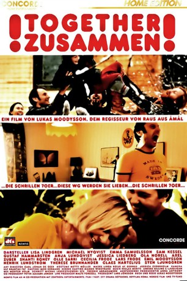
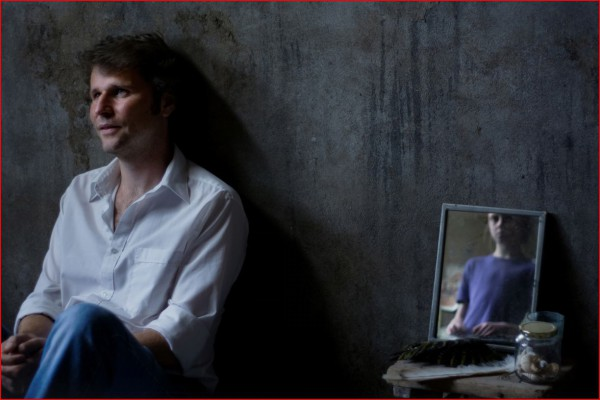

#10371 Zusammen!
 
 IMDB-Wertung: 7.5 / 10
IMDB-Wertung: 7.5 / 10  Metascore: 84
Metascore: 84 
Da Elisabeths Ehe vor dem Aus steht, zieht sie mit ihrem Sohn in der alternativen Hippie-WG ihres Bruders ein und lernt so die Welt aus anderen Augen zu betrachten...Witzige Komödie des schwedischen Regisseurs Moodyssohn.
Jahr: 2000
Dauer: 101 Minuten
FSK: 12
Land: Schweden Studio: Concorde FilmverleihTonspuren: DD5.1 - , - ,
Untertitel: Deutsch,
Auflösung: 720p (1280x720) Größe: 2365 MB
Genre: Drama, Komödie, Liebe
Regisseur: Lukas Moodysson
Drehbuch: Lukas Moodysson
Soundtrack:
Darsteller:
- Lisa Lindgren als Elisabeth
 Michael Nyqvist als Rolf
Michael Nyqvist als Rolf- Sam Kessel als Stefan
 Gustaf Hammarsten als Göran
Gustaf Hammarsten als Göran Ola Rapace als Lasse
Ola Rapace als Lasse-  Shanti Roney als Klas
- Olle Sarri als Erik
- Cecilia Frode als Signe
- Sten Ljunggren als Birger
- Emma Samuelsson als Eva
- Anja Lundqvist als Lena
- Jessica Liedberg als Anna
- Axel Zuber als Tet
- Lars Frode als Sigvard
- Emil Moodysson als Måne
- Henrik Lundström als Fredrik
- Thérèse Brunnander als Margit
- Claes Hartelius als Ragnar
- Mats Blomgren als
- Thomas Björnelin als
- Chun Yin Cheung als Waiter
- David Cheung als Waiter
- Khim Efraimsson als Waiter
- David Fornander als
- Johan Hammarén als
- Jasmine Heikura als Girl at Eva's school
- Anders Sticklestad Svensson als
- Karin Stigsdotter als
- Katarina Thörnblad als Girl at Eva's School
- Daniel Widlund als
Datei: X:\2000\Zusammen! (2000, FSK12, 1280x720).mkv seit 02.01.2019
Festplatte: Gemischt-01+Anime
 Es gibt insgesamt 82 Filme in der Gruppe '2000'
Es gibt insgesamt 82 Filme in der Gruppe '2000'